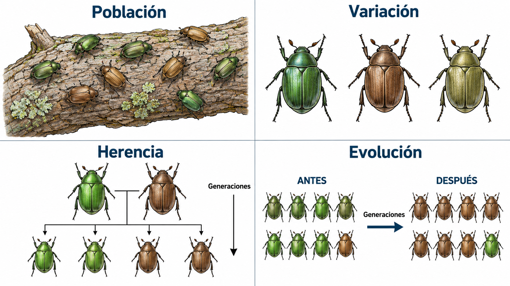
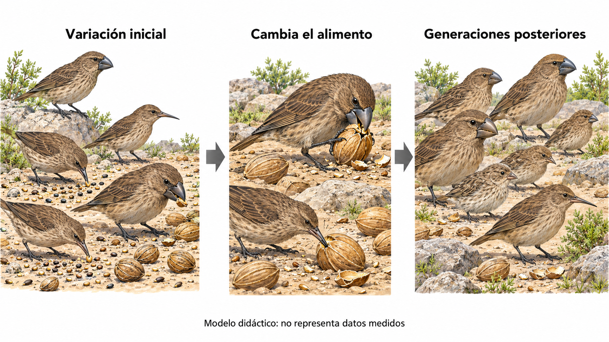
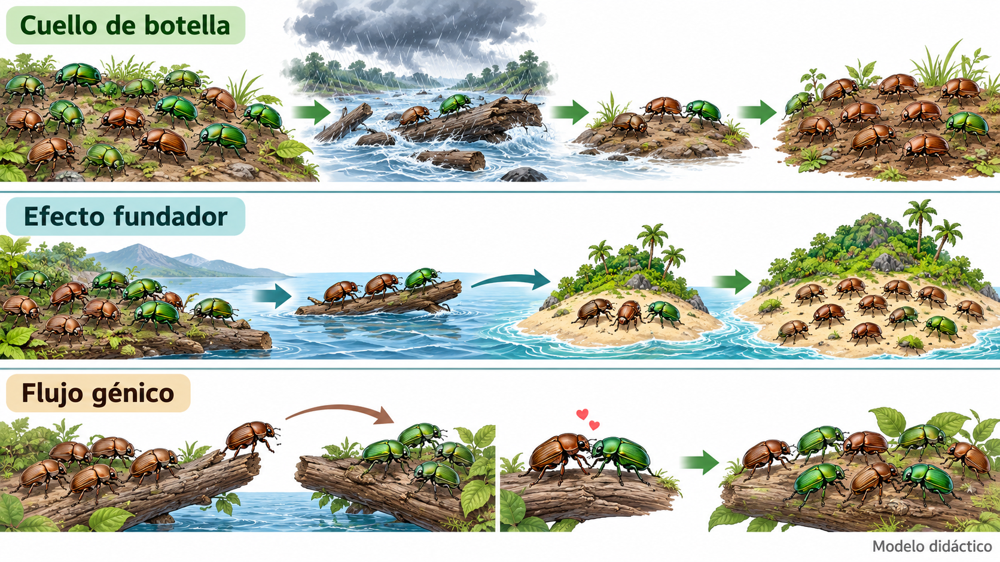
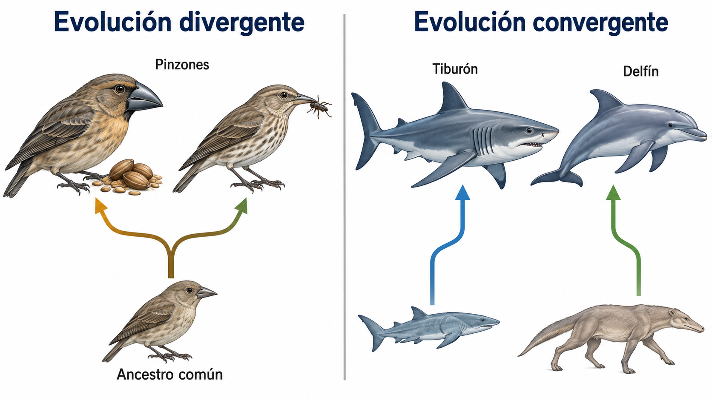
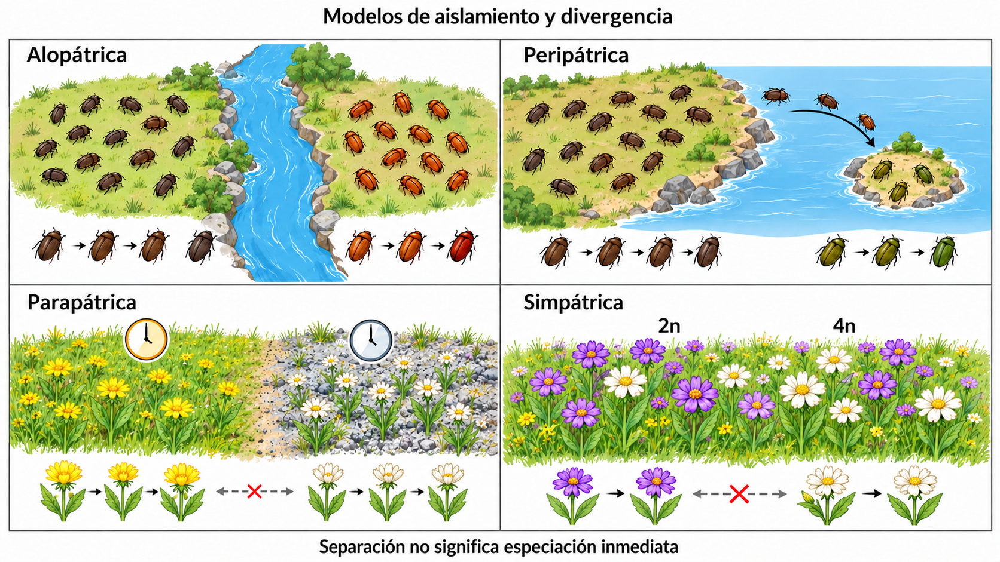
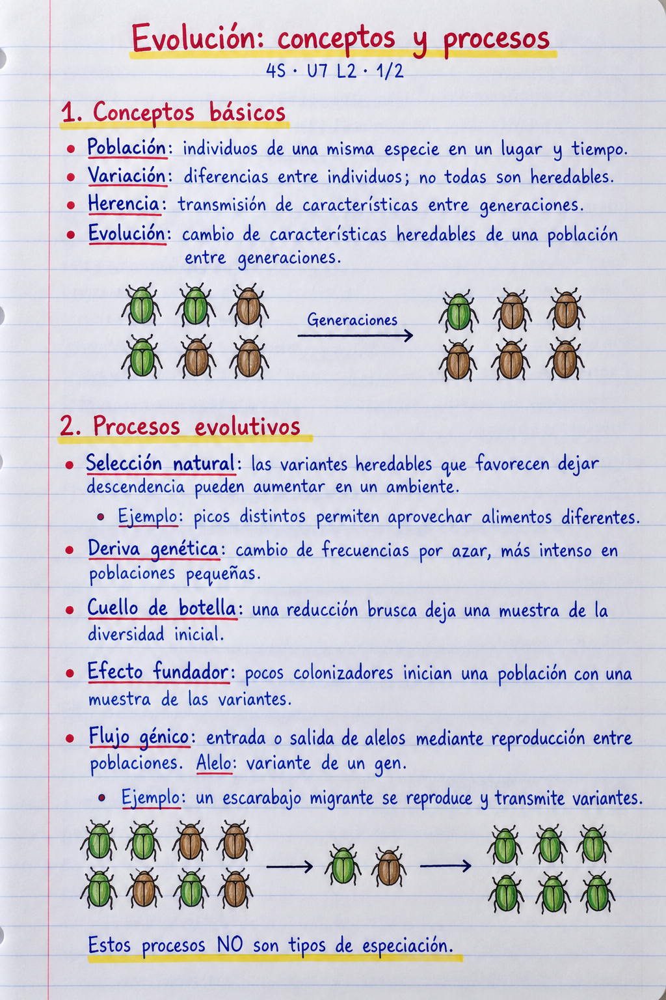
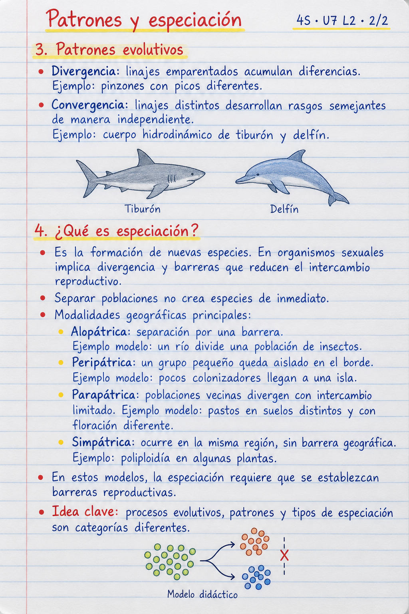

1. Argumentar con evidencia
Afirmación → evidencia → razonamiento.
¿Qué registro apoyaría nuestra explicación?
2. Conceptos básicos

Modelo: se supone variación heredable. No cambia un individuo por voluntad.
3. Procesos: selección natural

¿Qué relación hay entre rasgo, ambiente y descendencia?
3. Procesos: deriva genética

Filas 1 y 2: el azar cambia la muestra de variantes.
3. Procesos: flujo génico
Fila 3: migración + reproducción. Alelo = variante de un gen.
3. Patrones: divergencia y convergencia

Son patrones; no tipos de especiación.
4. ¿Qué es especiación?
Formación de nuevas especies
Divergencia + barreras reproductivas en el modelo sexual.
¿Qué evidencia falta además de separar dos poblaciones?
Antes: floración o cortejo distintos. Después: descendencia inviable o estéril.
4. Modalidades geográficas

Modelos: el aislamiento y la divergencia no son instantáneos.
Notas de cuaderno · 1/2

Notas de cuaderno · 2/2
